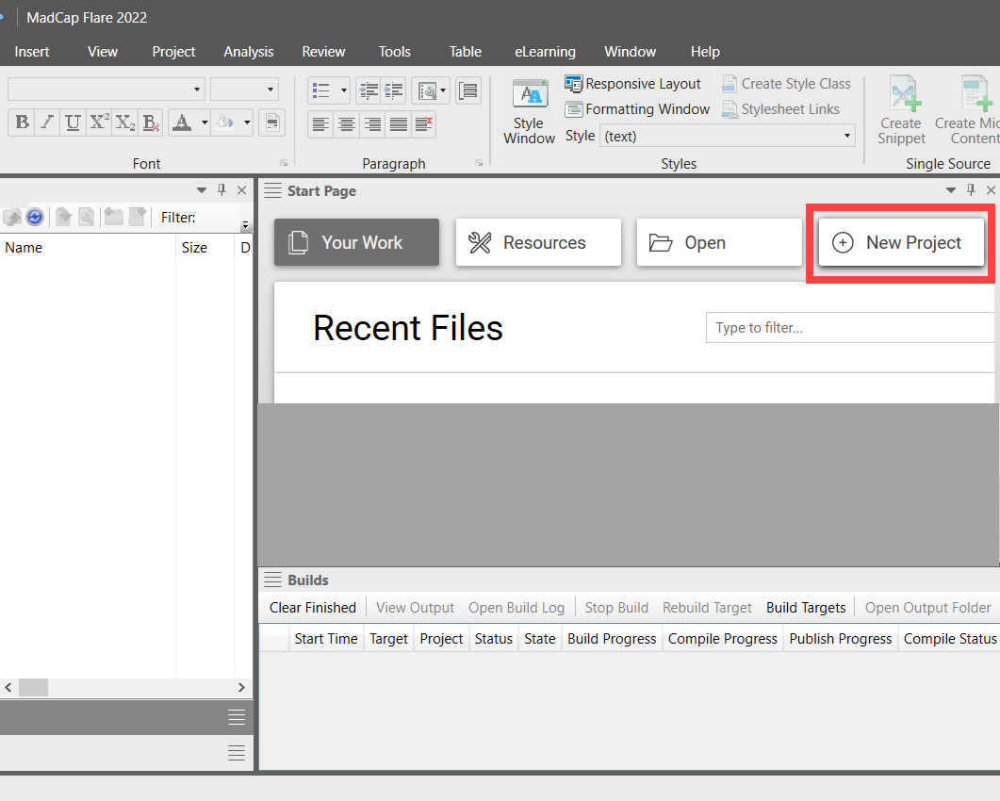

How to single-source a snippet in MadCap Flare
Select the template
-
In the "Start Page" window, click the "New Project"
button.

-
You will see a new window appear: "Start New Project Wizard".
-
In the "Project name" field, create a name for the project.
For example: "Project1".
-
At the bottom of the window, click the "Next" button.
-
In the field, "New from template", click to select the "Online"
folder.
Then click to select the "Knowledge Base"
template.
-
At the bottom of the window, click the "Next" button.
Then click the "Finish" button.
You will see this window close: "Start New Project Wizard".
Create the snippet
-
In the "Content Explorer" window, double-click the file: "System-Requirements.htm".
You will see the "Start Page" window is replaced by
the "System-Requirements.htm" window.
-
Under the "System Requirements" heading, click the "ul"
structure bar to highlight the 4 bullets in the list.
-
In the app's top menu bar, click to select the "Home"
tab".
-
In the center of the "Home" ribbon, click to select the
"Create snippet" button".
The "Create snippet" window will appear.
-
In the "Snippet File" field, type-in the name of the snippet.
For example: "Snippet1".
Note: The "Project Folder" is "Resources/Snippets/".
We'll need to know this in later steps.
-
Click to add a checkmark to the box labelled: "Replace Source Content with
the New Snippet".
Note: Since we're changing the source content to a snippet,
we want to replace the source content.
-
Click the "Create" button.
In the "Systems-Requirements.htm" window, you will see the snippet's
source content can't be edited.
View the snippet in its folder
-
Double-click the "Resources" folder in
the "Content Explorer" window.
-
Double-click the "Snippets" folder.
-
Double-click the snippet file we created: "Snippet1.flsnp".
You will see the snippet's window replace the "System-Requirements.htm"
window.
In this window, we can edit, then save the snippet.
Add the snippet to another page
-
In the left-pane of the "Content Explorer" window, double-click the "Contents"
folder.
-
In the right-pane, double-click: "Release-Notes.htm".
You will see "Release-Notes.htm" window replaces the "Snippet1.flsnp"
window.
-
Click the first "P" structure bar. Then click the "Enter"
key on your keyboard.
You will see the text is erased.
- Right-click on the empty space.
-
In the pop-up, scroll down to "Insert". Then click "Snippet"
in the sub-menu.
You will see the window: "Insert Snippet Link".
-
In the "Select Snippet" field, find the "Snippets" folder.
Then click: "Snippet1.flsnp".
-
Click "Ok".
In the "Release-Notes.htm" window, you will see the snippet has been
added.